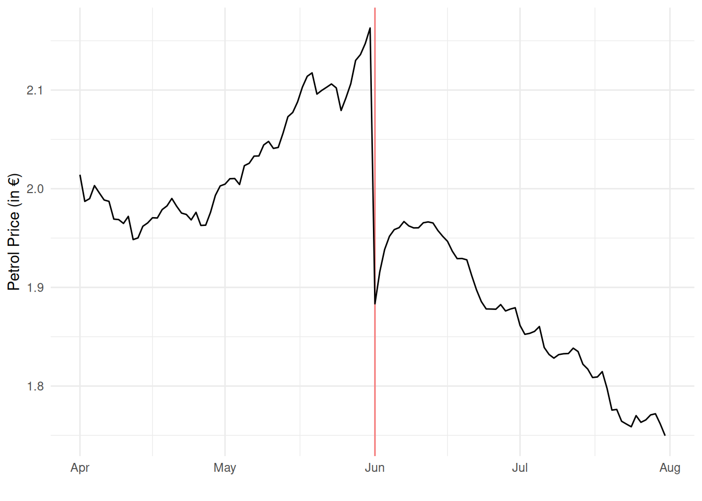
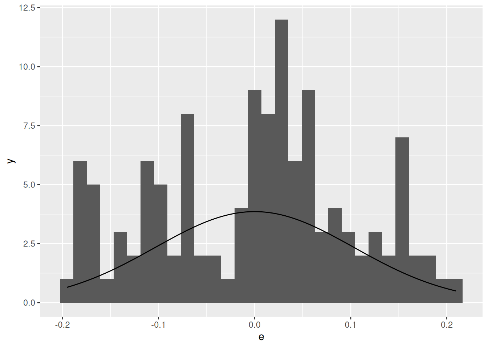
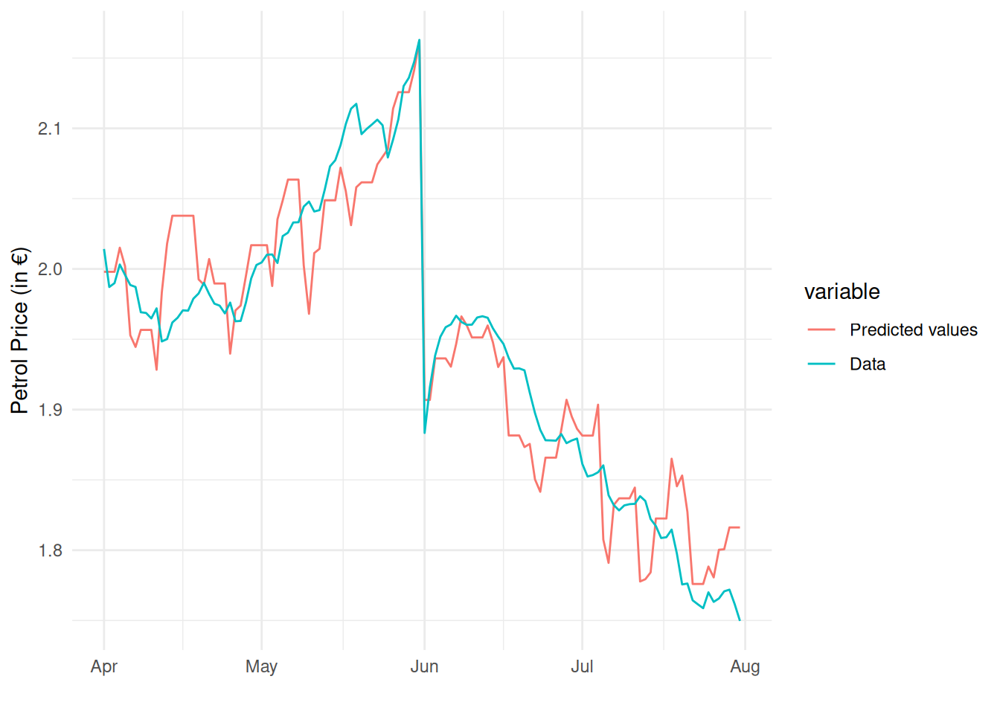
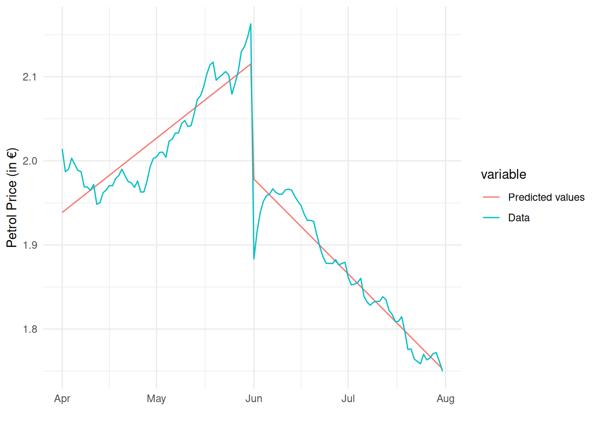
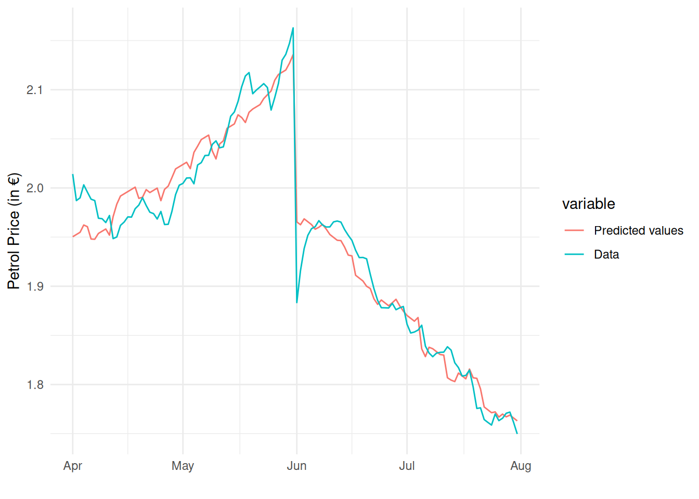

The year 2022 has seen enormous fluctuations in energy prices. The price of gasoline (petrol) is one of these that has changed price a lot over the last year. To reduce the financial burden on households, the German government reduced the excise duty on unleaded petrol by 29.55 cents starting on June 1, 2022. This excise duty is the tax the government places on a liter of petrol, which went from 65.45 cents down to 35.9 cents. This excise duty reduction had a large impact on the price of petrol, which can be seen by plotting the petrol price over time:
Show code generating the plot below
df <-read.csv("petrol.csv")df$date <-as.Date(df$date)library(ggplot2)invisible(Sys.setlocale("LC_TIME", "C")) # make months display in Englishggplot(df, aes(date, petrol)) +geom_vline(xintercept =as.Date("2022-06-01"), color ="red", alpha =0.5) +geom_line() +xlab("") +ylab("Petrol Price (in €)") +theme_minimal()

When the excise duty fell, petrol stations were not forced to reduce the price of petrol by the full amount. You have been tasked by the government to study how much the excise tax affects the price of petrol. You are given a data set which contains the average petrol price (averaged over all petrol stations in the country in a day), the excise duty, and Brent Crude oil price for each day between April 1 and July 31. The variable names and their descriptions are:
date: The date in format yyyy-mm-dd.
petrol: The average daily petrol price for E5 petrol (€ per liter) on that date.
duty: The excise duty on E5 petrol (€ per liter)
oil: The daily Brent Crude oil price (€ per barrel)
Question 1
What is the sample correlation coefficient between the price of petrol and the excise duty on petrol?
Choose the answer below which best represents the interpretation of the correlation in the previous question, where r represents your answer to the previous question.
A €1 increase in the excise duty on average leads to an increase in the price of petrol by r euros.
The excise duty data explains r% of the data on petrol prices.
There is a strong positive linear relationship between the price of petrol and the excise duty on it.
The correlation depends on the units of the variables used to calculate it and is therefore difficult to interpret.
Answer: There is a strong positive linear relationship between the price of petrol and the excise duty on it.
Model 1
Estimate a simple linear regression model explaining the price of petrol by the excise duty.
m1 <-lm(petrol ~ duty, data = df)summary(m1)
Call:
lm(formula = petrol ~ duty, data = df)
Residuals:
Min 1Q Median 3Q Max
-0.11576 -0.05084 -0.01239 0.06339 0.13595
Coefficients:
Estimate Std. Error t value Pr(>|t|)
(Intercept) 1.66927 0.02091 79.84 <2e-16 ***
duty 0.54644 0.03961 13.80 <2e-16 ***
---
Signif. codes: 0 '***' 0.001 '**' 0.01 '*' 0.05 '.' 0.1 ' ' 1
Residual standard error: 0.06464 on 120 degrees of freedom
Multiple R-squared: 0.6133, Adjusted R-squared: 0.6101
F-statistic: 190.3 on 1 and 120 DF, p-value: < 2.2e-16
Question 3
Your boss asks you to interpret the regression intercept. Choose the answer below which best represents how you should interpret the regression intercept for this particular dataset.
An increase in the excise duty of €1 per liter would on average lead to an increase in the petrol price of €1.67 per liter.
If the government would set the excise duty to zero, the price of petrol would become exactly €1.67 per liter. This prediction is reliable because the intercept is individually significant at the 1% level.
An increase in the petrol price of €1 per liter would on average lead to an increase in the excise duty of €1.67 per liter.
Because we don’t observe the excise duty at or near zero, we should be cautious when interpreting the intercept. In this case its prediction is unreliable.
Answer: Because we don’t observe the excise duty at or near zero, we should be cautious when interpreting the intercept. In this case its prediction is unreliable.
Explanation: The 1st option is wrong because that’s how we would interpret the slope if it was equal to 1.67, not the intercept. The 2nd option is wrong because this isn’t what would happen, it’s only what the model would predict would happen. Moreover, it’s unreliable because we don’t observe the duty anywhere near zero. The 3rd option is wrong because it’s like a wrong interpetation of the slope term (mixing up the independent variable with the dependent variable) and not the intercept term. The last option is right because we don’t observe the duty at or near zero, as can be seen from the summary output of the variable (lowest value of 35.9 cents):
summary(df$duty)
Min. 1st Qu. Median Mean 3rd Qu. Max.
0.3590 0.3590 0.5068 0.5068 0.6545 0.6545
Question 4
Report the sample regression slope.
Answer: 0.54644
We can read it from the summary output above, or else extract it from the model with:
coef(m1)[2]
duty
0.5464433
Question 5
Test the following claim: if the excise duty fell by €1, then the price of petrol would fall by more than 50 cents on average. Use a significance level of 5%.
What is the null hypothesis? \beta_1</\leq/>/\geq/=/\neq\underline{\hspace{20mm}} (choose one comparison operator and fill in a value in the blank).
What is the alternative hypothesis? \beta_1</\leq/>/\geq/=/\neq\underline{\hspace{20mm}} (choose one comparison operator and fill in a value in the blank).
The test statistic T=(B_1-b)/S_{B_1} follows a t distribution with n/k/n-1/n-2/n-k (choose one) degrees of freedom under H_0/H_1 (choose one).
What is the value of the test statistic? \underline{\hspace{20mm}}
What is the critical value? \underline{\hspace{20mm}}
Therefore, (choose an option below):
We reject, there is sufficient evidence that it would fall by more than 50 cents on average.
We don’t reject, there is sufficient evidence that it would fall by more than 50 cents on average.
We reject, there is insufficient evidence that it would fall by more than 50 cents on average.
We don’t reject, there is insufficient evidence that it would fall by more than 50 cents on average.
Answer:
H_0: \beta_1\leq 0.5.
H_1: \beta_1> 0.5.
T=\frac{B_1-b}{S_{B_1}} follows a t distribution with n-2 degrees of freedom under H_0.
The value of the test statistic is can be found with:
Therefore, we don’t reject, there is insufficient evidence that it would fall by more than 50 cents on average.
Explanation: The interpretation of the estimated slope is that if the duty increases by €1, then the price of petrol will increase by 54.6 cents on average. This means that if the duty decreases by €1, then the price of petrol will decrease by 54.6 cents on average. The claim says that the price of petrol would fall by more than 50 cents on average from a €1 decrease in the duty. This would happen if \beta_1>0.5. So this is the alternative hypothesis. The null is then \beta_1\leq 0.5. With a simple linear regression model, the test statistic follows a t distribution with n-k-1=n-2 degrees of freedom under H_0 (because k=1). This is an upper tail test so we get the critical value with qt(0.95, n-k-1), and we can use m1$df.residual to obtain n-k-1 directly, or else read it from the model output (120). Because the test statistic is greater than the critical value, we reject H_0.
Model 2
Estimate a simple linear regression model explaining the price of petrol with the price of Brent crude oil.
m2 <-lm(petrol ~ oil, data = df)summary(m2)
Call:
lm(formula = petrol ~ oil, data = df)
Residuals:
Min 1Q Median 3Q Max
-0.19536 -0.08191 0.01147 0.06111 0.20955
Coefficients:
Estimate Std. Error t value Pr(>|t|)
(Intercept) 1.879261 0.142817 13.16 <2e-16 ***
oil 0.000590 0.001256 0.47 0.64
---
Signif. codes: 0 '***' 0.001 '**' 0.01 '*' 0.05 '.' 0.1 ' ' 1
Residual standard error: 0.1039 on 120 degrees of freedom
Multiple R-squared: 0.001834, Adjusted R-squared: -0.006484
F-statistic: 0.2205 on 1 and 120 DF, p-value: 0.6395
Question 6
Use a t-test to test the following null and alternative hypotheses:
Assume for this question that the model assumptions hold. Use a significance level of 5%.
What is the value of the test statistic? \underline{\hspace{20mm}}
What is the test’s p-value? \underline{\hspace{20mm}}
What is the conclusion? Choose an option below:
p\leq \alpha; the model is useful.
p> \alpha; the model is useful.
p\leq \alpha; the model is useless.
p> \alpha; the model is useless.
Answer:
We can obtain the answers directly from the model output:
Test statistic: 0.47
p-value: 0.64
Conclusion: p> \alpha; the model is useless.
Question 7
Choose the correct options out of the options in bold below:
In a line plot of the residuals there is an increasing/a decreasing/no trend (choose one) in the first 60 time periods. This is an indication that linearity/homoskedasticity/normality/independence (choose one) holds/is violated (choose one).
In a scatter plot of the residuals against the Brent Crude oil price, all the residuals are positive/negative/zero (choose one) when the Brent Crude oil price is below €105 per barrel. This is an indication that linearity/homoskedasticity/normality/independence (choose one) holds/is violated (choose one).
In a histogram of the residuals, the bins of residuals deviate significantly from the fitted normal curve/line up very closely with the fitted normal curve (choose one). Therefore linearity/homoskedasticity/normality/independence (choose one) holds/is violated (choose one).
`stat_bin()` using `bins = 30`. Pick better value with `binwidth`.

In a line plot of the residuals there is an increasing trend in the first 60 time periods. This is an indication that independenceis violated.
In a scatter plot of the residuals against the Brent Crude oil price, all the residuals are positive when the Brent Crude oil price is below €105 per barrel. This is an indication that linearityis violated.
In a histogram of the residuals, the bins of residuals deviate significantly from the fitted normal curve. Therefore normalityis violated.
Explanation: For independence, there should be no discernable pattern in a plot of the residuals over time.
For the remaining two parts, these are no longer relevant starting in Fall 2024. Starting in Fall 2024 we no longer inspect the histogram of residuals for normality nor check for linearity. We only inspect scatter plots of the residuals against the independent variable for heteroskedasticity and the residuals over time for serial correlation. Therefore you don’t need to know how to make the histogram with the fitted normal curve.
Model 3
You think that the poor performance of the oil model is related to the fact that the excise duty changed so much half-way through the sample. You decide to make an improved model that combines the excise duty and the oil price to explain the petrol price.
Regress the variable petrol on the variables:
duty
oil
If you did this correctly, your estimated intercept should be 0.594.
m3 <-lm(petrol ~ duty + oil, data = df)summary(m3)
Call:
lm(formula = petrol ~ duty + oil, data = df)
Residuals:
Min 1Q Median 3Q Max
-0.077436 -0.019884 -0.003459 0.022454 0.082818
Coefficients:
Estimate Std. Error t value Pr(>|t|)
(Intercept) 0.5939982 0.0630736 9.418 4.49e-16 ***
duty 0.7696276 0.0248035 31.029 < 2e-16 ***
oil 0.0084825 0.0004897 17.323 < 2e-16 ***
---
Signif. codes: 0 '***' 0.001 '**' 0.01 '*' 0.05 '.' 0.1 ' ' 1
Residual standard error: 0.03459 on 119 degrees of freedom
Multiple R-squared: 0.8902, Adjusted R-squared: 0.8884
F-statistic: 482.4 on 2 and 119 DF, p-value: < 2.2e-16
Question 8
In the multiple linear regression model of the petrol price regressed on the variables (i) duty and (ii) oil, which variables are individually significant at the 1% level?
Answer:duty and oil.
Question 9
Choose the answer below that best represents the interpretation of the estimated coefficient on excise duty:
If the excise duty increases by 1 cent, then the price of petrol will increase by 0.77 cents.
If the excise duty increases by 1 cent, then the price of petrol will increase by 0.77 cents on average.
If the excise duty increases by 1 cent, then holding the Brent Crude oil price fixed, the price of petrol will increase by 0.77 cents.
If the excise duty increases by 1 cent, then holding the Brent Crude oil price fixed, the price of petrol will increase by 0.77 cents on average.
Answer: If the excise duty increases by 1 cent, then holding the Brent Crude oil price fixed, the price of petrol will increase by 0.77 cents on average.
Question 10
If the price of a barrel of oil increased by €10 while the excise duty remained fixed, by how many cents would the price of petrol be expected to increase according to the model?
Answer: 8.48 cents.
Explanation The interpretation of b_3=0.0084825 is that a €1 increase in the price of a barrel of oil increases the price of petrol by €0.00848 on average, holding the duty fixed. So a €10 increase will increase this by €0.0848 (multiply by 10). To convert this to cents, we multiply further by 100, so 8.48 cents. We can also calculate this in R with:
coef(m3)[3] *10*100
oil
8.482529
Question 11
Report a 95% confidence interval for \beta_1 (the coefficient on the excise duty).
The lower bound is 0.7205. The upper bound is 0.8187.
Question 12
The 95% confidence interval for the coefficient on Brent Crude oil is [0.007513, 0.009452]. Choose the answer below which best explains the interpretation of this confidence interval.
We are 95% confident that the population \beta_2 is between 0.007513 and 0.009452.
We are 95% confident that the estimator B_2 is between 0.007513 and 0.009452.
We are 95% confident that the sample estimate b_2 is between 0.007513 and 0.009452.
We are 95% confident that the hinge b is between 0.007513 and 0.009452.
Answer: We are 95% confident that the population \beta_2 is between 0.007513 and 0.009452.
Question 13
What percentage of variation in the petrol data is explained by the variation in the excise duty and Brent Crude oil price?
Write your answer as a percentage (a number between 0 and 100) and not as a proportion (a number between 0 and 1).
Answer: 89.01998. We multiply the R^2 by 100 to obtain this. We can read the R^2 from the summary output, or else we can calculate it directly with:
summary(m3)$r.squared *100
[1] 89.01998
Question 14
Use an appropriate test to test if this model is useful.
What is the null hypothesis? \beta_1=\beta_2=\underline{\hspace{20mm}} What is the alternative hypothesis? at least one of/each of/one of/none of (choose one) \beta_j\neq\underline{\hspace{20mm}} for j=1,2. Under the null hypothesis, the test statistic follows a(n) F/student t/normal/binomial/chi squared (choose one) distribution with \underline{\hspace{20mm}} numerator and \underline{\hspace{20mm}} denominator degrees of freedom. The a in the formula for the test statistic below in this sample equals \underline{\hspace{20mm}}
\frac{a/k}{SSE/(n-k-1)}
What is the value of the test statistic? \underline{\hspace{20mm}} What is the critical value? \underline{\hspace{20mm}} What is the conclusion? Choose one of the options below:
Reject; the model is useful.
Reject; the model is useless.
Don’t reject; the model is useful.
Don’t reject; the model is useless.
Answer:
H_0: \beta_1=\beta_2=0.
H_1: At least one of \beta_j\neq 0 for j=1,2.
Under H_0, the test statistic follows an F distribution with 2 numerator and 119 denominator degrees of freedom (numbers k=2 and n-k-1=119 can be read from the last line of the summary output).
The a in the formula is the SSR and can be calculated with:
anova(lm(petrol ~1, data = df), m3)
Analysis of Variance Table
Model 1: petrol ~ 1
Model 2: petrol ~ duty + oil
Res.Df RSS Df Sum of Sq F Pr(>F)
1 121 1.29662
2 119 0.14237 2 1.1542 482.39 < 2.2e-16 ***
---
Signif. codes: 0 '***' 0.001 '**' 0.01 '*' 0.05 '.' 0.1 ' ' 1
the SSR is 1.1542. - The value of the test statistic is 482.39. This can be calculated directly with:
summary(m3)$fstatistic
value numdf dendf
482.3934 2.0000 119.0000
The critical value is:
qf(0.95, 2, 119)
[1] 3.072429
The conclusion is Reject; the model is useful.
Question 15
On August 1st, the Brent Crude oil price was 106.09 and the excise duty remained at 35.9 cents. What is the predicted price of petrol on August 1st according to the model?
Use your model to construct an interval that contains with 95% probability the actual realization of the price of petrol on August 1st.
Explanation: We look in the data at what the price of oil was that day and use it in our prediction.
Model 4
If you plot the predicted values from the previous model (with the Excise duty and the Brent Crude oil price as independent variables) against the dependent variable over time, we can see that it fits the data reasonably well:
Show code generating the plot below
tmp <-read.csv("petrol.csv")m <-lm(petrol ~ duty + oil, data = tmp)tmp$date <-as.Date(tmp$date)tmp$`Predicted values`<- m$fitted.valuestmp$Data <- tmp$petrollibrary(ggplot2)invisible(Sys.setlocale("LC_TIME", "C")) # make months display in Englishtmp <- tmp[, c("date", "Predicted values", "Data")]library(reshape2)plot_df <-melt(tmp, id.vars ="date")ggplot(plot_df, aes(date, value, color = variable)) +geom_line() +xlab("") +ylab("Petrol Price (in €)") +theme_minimal()

However, your boss asks you to instead try a different approach to improve the fit. He asks you to model the petrol price as a function of the excise duty and period-specific time trends: one for April-May, and another for June-July.
Towards doing this, create two variables according to the following commands:
If you did this correctly, the first variable should be 1, 2, 3, …, 122 until the end of the data set. The second variable should contain zeros for each day until June 1st, after which it will be the sequence 1, 2, 3, …, 61 until the end of the data set.
Then use these two variables to estimate a regression model with petrol as the dependent variable and:
duty
t
t_post
as the three independent variables. If you estimated the model correctly, your estimated intercept should equal 1.641.
df$t <-1:nrow(df)df$t_post <-ifelse(as.Date(df$date) >as.Date("2022-05-31"), as.Date(df$date) -as.Date("2022-05-31"), 0)m4 <-lm(petrol ~ duty + t + t_post, data = df)summary(m4)
Call:
lm(formula = petrol ~ duty + t + t_post, data = df)
Residuals:
Min 1Q Median 3Q Max
-0.094879 -0.014864 -0.000491 0.013687 0.075536
Coefficients:
Estimate Std. Error t value Pr(>|t|)
(Intercept) 1.6407749 0.0225635 72.72 <2e-16 ***
duty 0.4506160 0.0298921 15.07 <2e-16 ***
t 0.0029424 0.0001773 16.59 <2e-16 ***
t_post -0.0067034 0.0002508 -26.73 <2e-16 ***
---
Signif. codes: 0 '***' 0.001 '**' 0.01 '*' 0.05 '.' 0.1 ' ' 1
Residual standard error: 0.02439 on 118 degrees of freedom
Multiple R-squared: 0.9459, Adjusted R-squared: 0.9445
F-statistic: 687.4 on 3 and 118 DF, p-value: < 2.2e-16
The predicted petrol price against the actual petrol price over time evolve according to the following graph:
Show code generating the plot below
tmp$`Predicted values`<-lm(petrol ~ duty + t + t_post, data = df)$fitted.valuesplot_df <-melt(tmp, id.vars ="date")ggplot(plot_df, aes(date, value, color = variable)) +geom_line() +xlab("") +ylab("Petrol Price (in €)") +theme_minimal()

With this model, the predicted petrol price follows a linear time trend in the first two months, then has an abrupt drop on June 1, after which it follows a linear trend again with a different slope.
Question 17
In the April-May period, holding the excise duty fixed, the model predicts that each day the petrol price is expected to increase by how many cents?
Answer: 0.29424 cents.
Explanation A one-unit increase in t on average increases petrol by 0.0029424 units, holding t_post and duty fixed. A unit increse t holding t_post fixed corresponds to a one-day increase in May-July (when t_post is zero). Finally 0.0029424 units of petrol is 0.29424 cents (multiply by 100).
Question 18
In the June-July period, holding the excise duty fixed, the model predicts that each day the petrol price is expected to decrease by how many cents?
Answer: 0.3761 cents.
Explanation The model is:
\mathbb{E}[petrol_t|duty_t,t_t,t\_post_t]=\beta_0+\beta_1duty_t + \beta_2 t_t + \beta_3 t\_post_t
Holding the duty fixed, one day later in the post period is:
\mathbb{E}[petrol_t|duty_t,t_t+1,t\_post_t+1]=\beta_0+\beta_1duty_t + \beta_2 \left(t_t+1\right) + \beta_3\left( t\_post_t+1\right)
Taking differences:
\beta_2+\beta_3
Thus we need to add b_2+b_3 to get the average effect of a one-day increase in the post-period (holding duty fixed). This is:
sum(coef(m4)[3:4])
[1] -0.00376095
Finally, the question is asking how big the decrease is in cents. So we multiply by 100 and take the absoute value:
-sum(coef(m4)[3:4]) *100
[1] 0.376095
Question 19
Report the coefficient of determination from the model.
Answer: We can read the R^2 straight from the summary output. This is 0.9459. We can also get it directly with:
summary(m4)$r.squared
[1] 0.9458794
Question 20
Between the models 3 (excise duty and Brent Crude oil) and 4 (excise duty and period-specific time trends), which can explain a higher percentage of the variation in the petrol price data?
The model with excise duty and the period-specific time trends (Model 4).
The model with excise duty and the Brent Crude oil price (Model 3).
The models contain different variables and cannot be compared.
Both models explain the petrol price data equally well because the total sum of squares is the same for both models.
Answer: The model with excise duty and the period-specific time trends (Model 4).
Explanation: Model 4’s R^2 is higher (0.9459 versus 0.8902). Model 4 can explain a higher proportion of the variation in petrol prices.
Model 5
Your boss thinks the period-specific time trends are promising. He then asks you to estimate a complete model explaining the petrol price by the following 4 variables, combining the previous approaches:
duty
oil
t
t_post
If you estimated the model correctly, your estimated intercept should be 1.325.
m5 <-lm(petrol ~ duty + oil + t + t_post, data = df)summary(m5)
Call:
lm(formula = petrol ~ duty + oil + t + t_post, data = df)
Residuals:
Min 1Q Median 3Q Max
-0.082110 -0.014665 -0.000869 0.015710 0.063820
Coefficients:
Estimate Std. Error t value Pr(>|t|)
(Intercept) 1.3251477 0.0728061 18.201 < 2e-16 ***
duty 0.5370511 0.0336404 15.964 < 2e-16 ***
oil 0.0025577 0.0005652 4.526 0.0000146 ***
t 0.0022609 0.0002229 10.145 < 2e-16 ***
t_post -0.0051800 0.0004090 -12.665 < 2e-16 ***
---
Signif. codes: 0 '***' 0.001 '**' 0.01 '*' 0.05 '.' 0.1 ' ' 1
Residual standard error: 0.02259 on 117 degrees of freedom
Multiple R-squared: 0.9539, Adjusted R-squared: 0.9524
F-statistic: 605.8 on 4 and 117 DF, p-value: < 2.2e-16
The model’s predictions over time now look like:
Show code generating the plot below
tmp$`Predicted values`<-lm(petrol ~ duty + oil + t + t_post, data = df)$fitted.valuesplot_df <-melt(tmp, id.vars ="date")ggplot(plot_df, aes(date, value, color = variable)) +geom_line() +xlab("") +ylab("Petrol Price (in €)") +theme_minimal()

Question 21
Using an appropriate test, test the joint usefulness of the period-specific trend terms (coefficients 3 and 4 in the model).
Use a significance level of 5%.
Using an appropriate test, test the joint usefulness of the period-specific trend terms (coefficients 3 and 4 in the model).
Use a significance level of 5%.
What is the null hypothesis? \beta_j = \underline{\hspace{20mm}} for j=1,2/3,4/1,2,3,4/0,1,2,3,4 (choose one).
The alternative hypothesis is that the null hypothesis does not hold.
The formula for the test statistic has the following form:
\frac{a/(k-g)}{b/(n-k-1)}
What is the value of a and b in your sample? a: \underline{\hspace{20mm}} b: \underline{\hspace{20mm}}
What is the value of the test statistic? \underline{\hspace{20mm}}
What is the critical value? \underline{\hspace{20mm}}
What is the conclusion? reject/don’t reject/accept/don’t accept (choose one) the null hypothesis. The period-specific trend terms are jointly useful/useless/colinear/different (choose one).
Answer:
H_0: \beta_j=0 for j=3,4.
H_1: \beta_j\neq 0 for j=3,4.
Under H_0, the test statistic F=\frac{(SSE_r-SSE_c)/(k-g)}{SSE_c/(n-k-1)} follows an F distribution with k-g=2 and n-k-1=117 degrees of freedom. Thus a represents SSE_r-SSE_c and b represents SSE_c. We can calculate these with:
anova(m3, m5)
Analysis of Variance Table
Model 1: petrol ~ duty + oil
Model 2: petrol ~ duty + oil + t + t_post
Res.Df RSS Df Sum of Sq F Pr(>F)
1 119 0.142369
2 117 0.059719 2 0.08265 80.963 < 2.2e-16 ***
---
Signif. codes: 0 '***' 0.001 '**' 0.01 '*' 0.05 '.' 0.1 ' ' 1
because m3 above is actually the reduced model (petrol ~ duty + oil) and m5 is the complete model. The value of SSE_r-SSE_c is 0.08265 and the value of SSE_c is 0.059719.
The value of the test statistic is 80.963.
The critical value can be found with:
qf(0.95, 2, 117)
[1] 3.073763
Conclusion: Reject the null hypothesis. The period-specific trend terms are jointly useful.